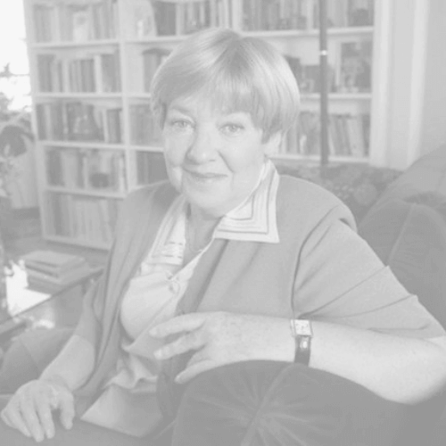

¿Te lo vas a perder?
Carlos Jáuregui. 1996.
Uno de los fundadores internacionales del festival.
Dará charlas y estará presente como productor del evento.
Carlos "Gato" Dumas. 2004.
Cocinero y amante de la comida, estará cocinando y dando charlas sobre degustación post-mortem.
Alejandra Pizarnik. 1972.
Poeta, escritora y amante.
Luis Alberto Spinetta. 2012.
Músico y artista, estará brindando un concierto con invitados especiales sorpresa.
María Elena Walsh. 2011.
Música y escritora.
Será la principal organizadora de la sección infantil del festival.

Federico Moura. 1988.
Músico, artista y otro de los fundadores internacionales del evento.
Se presentará junto a Spinetta y estará como productor del festival junto a Jáuregui y Walsh.